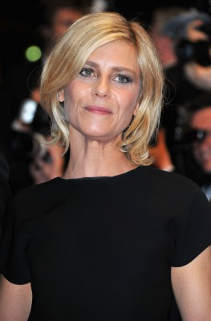

#2571 Mama gegen Papa - Wer hier verliert, gewinnt
 gesehen am 07.12.2015
gesehen am 07.12.2015

 IMDB-Wertung: 6.0 / 10
IMDB-Wertung: 6.0 / 10  Metascore: 0
Metascore: 0 
Florence (Marina Foïs) und Vincent Leroy (Laurent Lafitte) haben ein schönes Zuhause, drei Kinder und erfolgreiche Karrieren. Doch als es zur Scheidung kommt, steht ihr perfektes Leben auf dem Spiel. Der Grund dafür liegt aber nicht im Trennungsschmerz und auch nicht in der für viele Betroffene grauenhaften Aussicht, den Kontakt mit den Sprösslingen Mathias (Alexandre Desrousseaux), Emma (Anna Lemarchand) und Julien (Achille Potier) zu verlieren. Ganz im Gegenteil: Schlimm ist die Situation für Florence und Vincent, weil sie beide gerade jetzt einen Traumjob in Aussicht haben und den im Falle weiterer Elternpflichten vergessen können, weswegen keiner das Sorgerecht für die Kinder übernehmen will. Ein Richter bestimmt eine Frist von drei Wochen, nach der sich das Scheidungspaar entschieden haben muss. Und so entbrennt ein skurriler Kampf zwischen Vincent und Florence, dessen Ziel es ist, am Ende bloß nicht für die Kinder verantwortlich zu sein…
Jahr: 2015
Dauer: 85 Minuten
FSK: 0
Land: Frankreich Studio: Splendid FilmTonspuren:
Untertitel:
Auflösung: 1080p (1920x800) Größe: 3911 MB
Genre: Drama, Komödie, Liebe
Regisseur: Martin Bourboulon
Drehbuch: Matthieu Delaporte, Alexandre de La Patellière, Guillaume Clicquot de Mentque, Jérôme Fansten
Soundtrack: Jérôme Rebotier
Darsteller:
-  Marina Foïs als Florence Leroy
- Judith El Zein als Virginie
- Jean-Baptiste Fonck als Simon
- Anne Le Nen als La monitrice de Krav-Maga
 Laurent Lafitte als Vincent Leroy
Laurent Lafitte als Vincent Leroy- Alexandre Desrousseaux als Mathias Leroy
- Anna Lemarchand als Emma Leroy
- Achille Potier als Julien Leroy
- Michaël Abiteboul als Paul
- Vanessa Guide als Marion
- Michel Vuillermoz als Coutine
- Anne Le Ny als La juge
- Yves Verhoeven als Henri
- Yannick Choirat als Xavier
- Théoline Lanckriet als Camille
- Mireille Franchino als Gisèle, la mère d'Henri
- Éric Naggar als Professeur Malinvaud
- Pierre Samuel als L'agent immobilier
- Lilly-Fleur Pointeaux als Elodie
- Denis Leluc als M. Rassamian
- Esteban Tigharghar als L'ado
- Thierry Angelvi als Le flic
- Sloan-Perry Ambassa als L'hôtesse black
- Aurélia Félix als L'infirmière
- Dominique Fouassier als Monsieur Patinball
- Marie Cahuzac als Interne Malinvaud
- Guillaume Larbi als Le papa photographe
 Jonathan Louis als Un homme en soirée , uncredited
Jonathan Louis als Un homme en soirée , uncredited
Datei: X:\2-Dilogie(G-M)\Mama gegen Papa\Mama gegen Papa - Wer hier verliert, gewinnt (2015, FSK0, 1920x800).mkv seit 24.11.2015
Festplatte: HD Collection-2(A-Z)-3(A-M)
 Alle Filme aus Gruppe '2-Dilogie(G-M)\Mama gegen Papa'
Alle Filme aus Gruppe '2-Dilogie(G-M)\Mama gegen Papa'